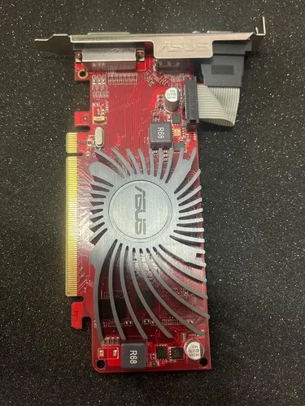

DESCRIPCION
La serie Radeon HD 5000 de AMD, lanzada en 2010, representó una evolución significativa en la línea de tarjetas gráficas. Basada en la arquitectura TeraScale 3, estas tarjetas ofrecían un rendimiento mejorado respecto a sus predecesoras, con soporte para DirectX 11 y OpenGL 3.3. La serie HD 5000 fue bien recibida por los usuarios y jugadores, destacándose por su eficiencia energética y calidad de imagen.

ESPECIFICACIONES
precio: 80$
nota: Esta tarjeta gráfica es ideal para usuarios que buscan un excelente rendimiento en juegos y aplicaciones multimedia, con un consumo de energía relativamente bajo.
Realizar pedido